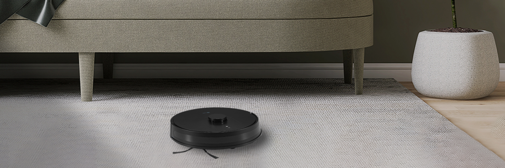
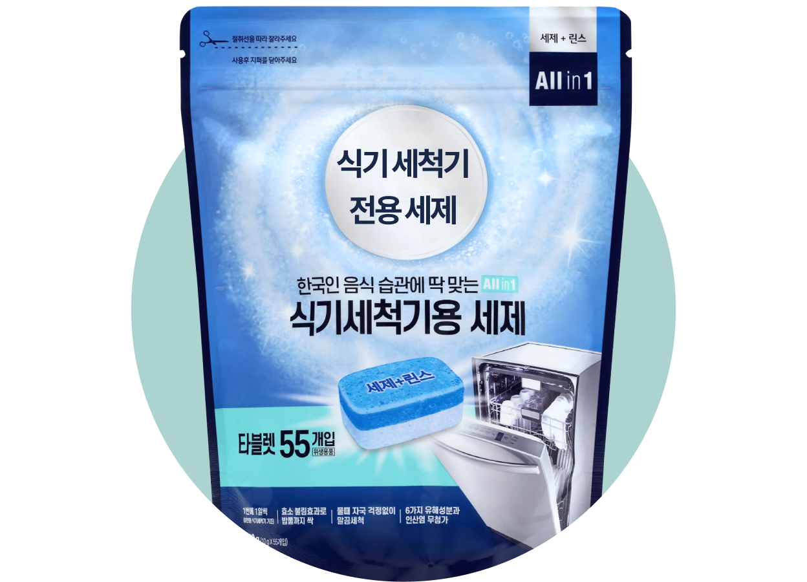

주방식기세척기


보다 더 스마트한 일상
LG ThinQ의 시작

보다 더 스마트한 일상, LG ThinQ
씽큐는 사람과 가전을 AI 기술로 연결하여 더 편리하고 놀라운 일상을 만드는 LG전자의 스마트 홈 플랫폼입니다.
* 본 콘텐츠는 ThinQ 앱의 콘텐츠입니다.
식기세척기는 반드시 전용 세제를 사용해야 해요.
식기세척기 전용 세제를 사용해야 되는 이유와 세제 사용 팁을 알아볼까요?
식기세척기 전용 세제를 꼭 사용해야 하는 이유
식기세척기를 접하기 전이었거나 처음 사용하려 할 때 식기세척기 전용 세제 대신 손 설거지 시 주로 사용하는 일반 주방 세제를 사용해도 되지 않을까 생각해 본 적이 있으실 거예요.
그러나 식기세척기 전용 세제를 사용해야 되는 이유가 있어요.
우선, 식기세척기 전용 세제와 일반 주방용 세제 각각 들어간 성분이 달라요. 일반 주방용 세제는 1종 세제로 특히 야채나 과일 세척, 음식기, 조리기구 세척 용도에 적합하고, 식기세척기 세제는 2종 세제에 속하며 식기나 식품용 기구 세척 용도에 적합하다고 규정하고 있어요. 그래서 식기세척기에 일반 주방용 세제를 사용하면 세척력이 약할 수 있죠.
식기세척기에 일반 주방용 세제를 사용하면 거품이 많이 발생할 수 있고, 이로 인해 식기세척기의 고장이나 감전·화재의 원인이 될 수도 있어요. 구매 전 반드시 식기세척기 전용 세제인지 확인하세요.

식기세척기 전용 세제를 투입하기 전 알아두기
요즘 식기세척기 세제는 액상, 고상, 분말 등 다양한 제형으로 판매되고 있어요.
분말 세제의 경우 계량은 어렵지만 자유롭게 사용량 조절이 가능하다거나 액체 세제는 잔류 세제에 대한 걱정이 적다는 등, 각각의 장단점으로 소비자들의 선택의 폭을 넓혀 주고 있어요.
소비자의 상황에 맞는 세제 종류와 적정량을 선택하여 사용하는 것이 중요해요.
적정 세제량은 어떻게 판단할까?
세제의 적정 사용량을 판단할 때는 식기의 양보다는 오염도가 더 중요해요. 예를 들어, 식기가 많아도 애벌 세척 등의 이유로 오염이 심하지 않을 땐 적은 양의 세제를 사용하고, 식기의 양은 적어도 오염이 심할 경우엔 조금 더 충분한 양의 세제를 사용하는 것을 권장해요.
세제 적정 사용량은 세제 제품별 권장 사용량을 참고하여 사용해 주세요.
알아두면 쓸 데 있는 세제 관련 Q&A
Q1자주 사용하니까 세제 뚜껑 열어 두는 데 괜찮을까요?
분말이나 고상(타블렛, 캡슐) 세제는 반드시 제품의 지퍼백이나 뚜껑을 꼭 닫아 보관하여 사용해 주세요.
특히, 일부 고상(타블렛, 캡슐) 세제의 경우 PVA 재질의 필름으로 둘러싸여 있어, 필름이 수분을 흡수할 경우 필름끼리 서로 들러붙어 떼어내는 과정에 액체가 셀 수 있고 세제의 형태가 변형 될 수도 있죠.
분말이나 고상(타블렛, 캡슐) 세제는 반드시 제품의 지퍼백이나 뚜껑을 꼭 닫아 보관하여 사용해 주세요.
Q2
액상 세제를 사용하고 있는데 세척 성능이 조금 약한 것 같아요. 왜 그런 걸까요?
식기세척기 전용 세제는 음식물들을 효과적으로 세척하기 위한 여러 성분들로 구성되어 있어요.
액상 세제는 이런 세척을 위한 성분 외에 액상 상태를 유지하기 위한 성분이 포함돼 있어, 동일한 양의 분말이나 고상 세제와 비교했을 때 세척을 위한 성분들이 적으므로 상대적으로 세척력이 약할 수 있답니다.
하지만 분말, 고상 세제는 물에 녹는 과정이 필요한 데 비해 액상 세제는 이미 녹아 있는 상태이고 물에 쉽게 섞일 수 있어 세제 잔여물이 남지 않는다는 장점도 있어요.
세제 형태별 특성을 고려 후 선택하여 사용해 주세요.
식기세척기는 반드시 전용 세제를!
잊지 마세요.


LG ThinQ
ThinQ 하나로 더 좋아지는 일상
일상을 더 편하고 스마트하게 만들어주는 씽큐 앱을 지금 바로 만나보세요.
- #세제
- #세제사용팁
- #세제종류
- #세제적적량
- #식기세척기
- #식기세척기사용법
- #식기세척기세제
- #전용세제
- 원고 감수: (주)LG생활건강